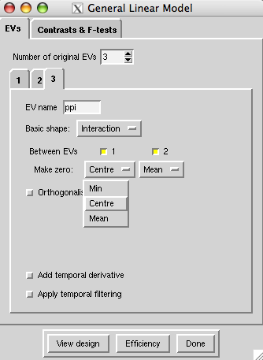

How to run a PPI analysis in Feat
Instructions for implementing a PPI analysis with the Feat gui.
See also: Frequently Asked Questions (PPI)
1. Make some decisions
Because you start by choosing and ROI and task contrast, PPI is heavily hypothesis driven. If you don’t have a clear hypothesis about functional connectivity, you might consider using a model-free approach like MELODIC, which also gives you ‘network’ information of a different kind. On the other hand, you can also try running lots of different PPIs with different seed regions until you find something interesting….
Choose your ROI
For a PPI analysis, you must select a seed Region of Interest (ROI) – the point of the analysis is to look for areas which ‘interact’ with this seed region.
There are several types of ROI you might go for:
An anatomical region of interest. For example, you might have an a priori hypothesis about the functional connectivity, in your task, of the hippocampus, or the putamen, or some other region which you can define from a structural scan.
An ROI based on functional activations from your initial GLM (Feat) analysis. For example, you might find a few blobs associated with your task of interest, and you hypothesis that these blobs can be grouped into a couple of separate networks. Maybe you were doing a memory task, and it activated the hippocampus. You have some idea what the hippocampus is doing, so now you want to know which areas have increased functional connectivity with it during your task, and which areas are involved, but not interacting with the hippocampus.
An ROI based on a local maximum in one of your MELODIC components. For example, say you analyzed your data with group-MELODIC and you found the two biggest components were, say, an attentional (dorsal, frontal-parietal) network and a memory network (say, prefrontal and medial temporal areas). And say your experiment looked at how your memories can bias your attention, comparing trials with familiar stimuli and novel stimuli. Then the attention and memory networks might describe the two major cognitive components of your whole dataset (all trials together) - but for you the critical point of interest is whether there is more interaction between networks in your attention-from-memory task. You can pick a blob from one of your melodic components, which you think might be the 'linking' node, and use it as the seed for a PPI, which tells you about task-specific interactions. Note that MELODIC blobs may be more likely to be 'good' seeds for your PPI analysis than GLM/Feat blobs, because MELODIC is a more network-oriented type of analysis.
Choose your task contrast
PPI analysis always looks for voxels with increased functional connectivity to your seed ROI in one condition compared to another. Usually, the contrast will be between conditions within a single scanning session, and you need to decide whether this will be a contrast of one condition vs everything else (a 1 0 contrast) or a contrast between two conditions (a 1 -1 contrast). More details about this are in the FAQ.
However, you may also be interested in comparing between scanning sessions, for example before and after an intervention, such as a drug or brain stimulation - or even betweens groups (e.g. patients vs. controls). A discussion of between-subjects designs can be found here.
2. Prepare your regressors
You need to extract the timecourse from the seed ROI and put it into a format which Feat can read, before using Feat to make your PPI regressor.
Make masks for the seed ROI
You need to make a mask for your seed region in each individual subject’s functional native space (that is, the space of the fMRI image you want to analyse).
Anatomical region of interest
Your options are:
- Draw a mask on individuals’ structural scans with Fslview
- Draw a mask on the standard brain and transforming it into individual space using FLIRT or FNIRT
- Use an automated segmentation tool eg FIRST.
Functional region of interest
Your options are:
- On your group Feat results/ MELODIC component, draw a region of interest over the blob you are interested in. Transform this into the functional space of each individual using FLIRT or FNIRT. Check, for each individual, that your ROI is a sensible size and is contained within the brain and within the anatomical region of interest (if your ROI is near the surface and ends up lapping over the edge of the brain in some subjects, your timecourse data will be very noisy, so you really do need to check).
- Go to each individual subject's Feat results and pick the peak voxel in the region of interest. Draw a small mask surrounding this peak voxel.
This may be a more successful strategy when the functional regions are anatomically heterogeneous but functionally well defined, e.g. in the parietal cortex.
Size of ROIs
If you are defining ROIs individually (as in the second functional-ROI case, or some of the anatomical cases) you analysis will likely work better (have higher signal-to-noise) if you keep the ROI small. This is because you are only taking one measurement from the whole ROI – so by enlarging the ROI to include voxels with a weaker effect you are actually ‘watering down’ the signal.
On the other hand, if you are using a standard-space mask (as in the first functional-ROI strategy), you will want to make sure your ROI is large enough to capture the individual activation peak for each subject, despite inter-individual variations.
Extract the time-course of the seed ROI
Do this for each subject separately, using the fslmeants command.
You should use the filtered func data from your initial analysis to extract the timecourse from - not the raw data as this will be noisy.
fslmeants -i filtered_func.nii.gz -o my_timecourse.txt -m your_roi_mask.nii.gz
The output is a column vector giving a value of raw signal at each time-point; there is one time-point per volume. The time-course is saved under a filename specified by you, for use later on.
3. Set up your Feat design
- Go into Feat and load your data and set up your pre-processing as normal
- If you are using the filtered_func from your GLM analysis as input, remember not to re-do any pre-processing steps such as BET, deleting volumes, or filtering.
In the stats tab
You will need the following regressors:
EV1 is your psychological regressor (PSY). This will simply be your task regressor, convolved with an HRF;
EV2 is your physiological regressor (PHYS). This will be the time-course of your seed ROI:
Basic shape is ‘custom (1 entry per volume)’ and the input file is the time-course from the seed region, which you generated earlier with fslmeants.
Set convolution to none because this is BOLD data and has already been convolved by the brain!
Switch off temporal derivative and temporal filtering
EV3 is PPI, which you generate here in the Feat GUI;
Basic shape is ‘interaction’
Between EVs: select EV1 and EV2
Make zero - these drop down boxes give you the choice of Min, Centre and Mean. You should choose
centre for your task (PSY) EV, and
mean for your ROI timecourse (PHYS) EV.
Orthogonalise: You should probably not do this. If in doubt, have a look at the notes on orthogonalizing in the main Feat page and the FSL course. Effectively, orthogonalizing means that the stats for the EV you orthogonalize with respect to (not the EV where you click the 'orthogonalize' button) change. Why? Because in the GLM, if some activity in your voxel is correlated with BOTH EVs A and B, is is not assigned to either. Now, If A and B are partially correlated (eg if they are your PSY and PPI) then some activity in some voxels may be correlated with the correlated part of A and B. This activity is therefore assigned to neither A nor B. Orthogonalizing B with respect to A changes regressor B, to remove the part which was correlated with A. This means that the activity which was correlated with both A and B, which was previously not modelled, is now only correlated with A - so the estimate for EV A changes. The esitmate for EV B stays the same, because you have only taken away the part of that EV which was correlated with A, and therefore didn't get any activity assigned to it anyway. Now, in Feat you always orthogonalize the later-created EV w.r.t. the earlier-created one, and the PPI EV will necessarily be created after the task EV- So if you were to orthogonalise your PPI EV with respect to your task EV, the effect of orthogonalizing would be on the results for the main effect of task, not on the PPI effect.
Switch off temporal derivative and temporal filtering

Other task regressors As well as the three EVs described here, you should include all the task EVs you included in your original model, in the setup for the PPI analysis. So your setup should look like the setup for your original (standard) Feat analysis, but with the physiological and PPI regressors added. The model describes the data better if all task EVs are included.
This completes the set-up for the first-level analysis. You can then compare between groups at the second level as normal.